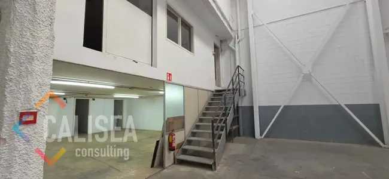
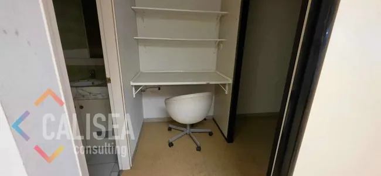
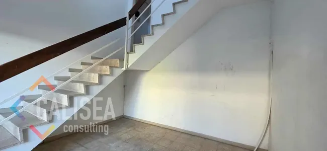

Plano · tocar un número de la lista lo marca acá
Letras: condiciones go/no-go · o: obra necesaria · números: lo que hay que medir o confirmar · c: lo que el chequeo de circulación marca hoy · trazos: el área o la franja de la cota · la línea azul: el largo libre a lo largo de la pista · ejes x/z: el origen de las cotas.
Condiciones go/no-go · si alguna sale mal, la nave se cae o hay que rehacer el layout
- Con margenDecide: ≥ 7,5 m libres bajo jácenas, cerchas, luminarias e instalaciones en la vertical de la plataforma: plataforma a 4,7 m + 2,4 m del rider + 0,4 m de instalaciones (PROGRAMA §1). Si da menos, se baja la plataforma (a lo medido − 2,8 m), nunca el run-out.Altura libre medida con láser sobre la plataforma (m):
6 notas del layout
fuente de la cota: foto (fotos 0 y 5: rodilla de los pórticos a ≈8,4 m con el zócalo de 1,60 m (7 hiladas) como escala, contrastado con la puerta de 2,07 m de foto 0); publicada 9,20 m bajo viga = altura bajo cumbrera (fotos: ≈9,0-9,1 m) → se toma la menor
riesgo: Altura: los 9,20 m del anuncio son de cumbrera; en la rodilla de los pórticos hay ≈8,4 m y la cartela baja algo más junto a los pilares. Comprobar en la vertical de la plataforma (pórtico del testero).
riesgo: match: el visor no dibuja (limitación del motor, no del layout) las cartelas de los pórticos en rodilla y cumbrera (fotos 0, 1 y 5: jácenas de canto variable), las cruces de San Andrés de las crujías extremas, las correas de fachada ni las bajantes, ventanas sueltas en los frentes de los altillos (P1 tiene 2 ventanas y una puerta hacia la nave y P2 un portillón de ≈1,4 × 1,8 m a ≈5,7 m sobre el paso TIR, foto 0) ni las 2 filas de campanas existentes (dibuja su retícula de 6 × 6 m y conductos textiles de climatización que son propuesta). La luz del visor es más cálida que la de las fotos (muros beige en vez de blancos), pero las proporciones suelo/muro/zócalo coinciden (suelo/muro ≈0,8 en ambas).
riesgo: medir en la visita: crujía tipo de la nave diáfana (fotos 1 y 5 con el objetivo principal: ≈6,2-6,6 m; recuento de bloques de foto 5: ≈5,9 m) y altura del forjado de P2 (layout 5,2 m; en foto 0 se lee un canto a ≈5,5 m).
supuesto: Pórticos de la nave en z ≈ 0,15 · 4,4 · 10,95 · 17,55 · 24,1 · 30,65 · 34,55 (crujía tipo ≈6,55 m, extremas de ≈4,25 y ≈3,9 m); el bloque de oficinas tiene estructura propia (pilares ignifugados y cerchas en P2). Como columns declara los pilares de las dos medianeras, el visor pone los pórticos en esas posiciones. match (fix): la crujía tipo de 6,55 m es un supuesto, no una medida. A favor: los 290 m² publicados de P1 + P2 (24,45 m de forjados × ≈11,7 m de bloque de oficinas) y los 752 m² de PB. En contra: el recuento de bloques del zócalo en el vano z 17,55-24,1 de la medianera x=16,2 (foto 5: 10,5 bloques por hilada a la vista; con bloques de proporción 2:1, ≈0,46 m, salen ≈5,9 ± 0,3 m entre pórticos; con la crujía de 6,55 los bloques medirían ≈0,51 × 0,23 m), la convergencia de los pilares de foto 0 (f ≈795 px → crujías 6-10 % más cortas) y la resolución de foto 0 con pórticos libres (f ≈700 px, gran angular de 13 mm → ≈5,2 m). Si fueran de ≈5,9 m: pórticos en z ≈0 · 3,8 · 9,7 · 15,6 · 21,5 · 27,4 · 31,0, frente de oficinas en ≈31,2 y PB ≈700 m² con el bloque de 11,7 m (≈730 m² construidos; o 752 con un bloque de ≈15 m, pero entonces P1 + P2 ≈375 m²).
supuesto: Bloque de oficinas (z 35,5-46,4; match3 (fix): frente medido en foto 3, antes 34,7): P1 en la mitad x 0-8,25 (forjado a 2,55 y 2,4 m hasta el falso techo) y P2 corrida a 5,2 m, dibujada en dos piezas (sobre P1 y sobre el paso) con el lado común abierto y sin pilares automáticos; el paso TIR (x 8,25-16,2) queda con ≈4,7 m libres. P1 + P2 ≈ 266 m² (24,45 × 10,9). Lectura del anuncio: las plantas altas son 60 m² de «altillo» + 230 de «oficinas»; con los 290 el bloque mediría ≈11,9 m y si P1 + P2 fueran solo los 230, ≈9,4 m (frente en ≈37,0): la superficie no fija el frente, se dibuja donde lo mide foto 3.
- Con margenDecide: ≥ 30,4 m en línea recta a lo largo de la pista (plataforma 2 m, rampa, llano y el final más largo, run-out ≥ 8 m), del muro detrás de la plataforma al frente del altillo después del final. Si da menos, se acorta la rampa o el llano y se baja la plataforma, nunca el run-out.Distancia del muro al frente del altillo, a lo largo de la pista (m):
1 nota del layout
supuesto: Sentido de bajada +z: plataforma contra el testero ciego y final hacia las oficinas; la escalera (3 tramos rectos de 9 contrahuellas de 0,174 y huellas de 0,28, 2 descansos y rellano superior), dibujada de 1,5 m para que entre los postes de la red y su barandilla queden 1,20 m útiles, sube pegada al lado −x de la rampa, de z 12,05 a la plataforma (rellano superior en z 0,85-2,05, donde la barandilla de la plataforma deja el hueco). A su lado, entre el taller, las taquillas y los vestuarios (que terminan en x 3,8) y la escalera, queda un paso de 1,25 m del testero al retorno.
- Se decide en la visitaDecide: Dos salidas o más a la calle o a un espacio exterior seguro, con recorridos de evacuación ≤ 50 m (CTE DB-SI 3 §3, tabla 3.1), y sus puertas con ≥ 0,80 m de paso y 2,10 m bajo el dintel. Cada salida nueva solo vale si el muro da a la calle o a un patio con salida y la propiedad deja abrirla (las obras, en «Obra necesaria»).
- acceso acristalado de 1,4 m en la arista 2 (hueco 0, x 15,3 · z 46,4): nueva (hay que abrirla) · obra o1
- salida de emergencia de 0,9 m en la arista 2 (hueco 2, x 8,75 · z 46,4): nueva (hay que abrirla) · obra o2
- puerta peatonal de 0,95 m en la arista 2 (hueco 6, x 2,4 · z 46,4)
- salida de emergencia de 0,9 m en la arista 0 (hueco 8, x 4,42 · z 0): nueva (hay que abrirla) · obra o3
Salidas confirmadas (cuáles, a dónde dan, ancho de paso):4 notas del layout
riesgo: Evacuación: las salidas de hoy dan al patio delantero, a ≈46 m del testero. Desde el extremo de la plataforma (plataforma, escalera de 11,2 m, retorno, lounge, paso) eran 57,8 m (walk) > 50: no hay replanteo que lo baje, porque la plataforma está contra el testero y la escalera ya baja hacia la fachada. Por eso la salida de emergencia propuesta en el testero (ver «transitable»): con ella, walk da 35,7 m como mucho y 23,8 m hasta un punto con dos recorridos alternativos (≤ 25). Sin ella, rociadores (+25 %, 62,5 m; walk no los mide). El portón TIR solo contaría como salida con una puerta peatonal incorporada.
riesgo: Franja de programa ajustada: líneas de 3,0 m (el mínimo del PROGRAMA: con 3,05 la franja del murete pisaba los pilares de x=16,2) y paso de 1,25 m entre el taller, las taquillas o el vestuario M y la escalera (de 1,5 m). Recepción + alquiler suman ≈33 m² (9,9 + 22,9) más el carril delante, frente a 35-50 m². Lounge + café suman ≈30 m² (22 + 7,7), el mínimo, porque el lounge deja libre la salida del run-out.
riesgo: transitable (24/11, walk: 6 errores → 0 de los de entonces; queda 1 de la obra existente): (1) la escalera de la plataforma, dibujada de 1,2 m, dejaba 0,98 útiles entre su barandilla y los postes de la red: pasa a x 5,05-6,55 (1,5 m), y los vestuarios, las taquillas, el pad y el taller terminan en x 3,8 (vestuarios de 23,2 m², pad de 42,5 m², taller de 16,7 m²) para que el paso de al lado siga de 1,25 m; la BIE 1 y el extintor 2 van a esa cara. (2) El retorno de 2,2 m dejaba 1,75 libres (la BIE 1 y lo de abajo de la escalera): pasa a x 4,05-6,3, centrado entre la BIE y la franja de la pista (2,25 libres). (3) El aseo adaptado de 2,25 × 2,3 dejaba un giro de Ø 1,44: pasa a 2,35 × 2,5 (x 8,5, z 34,9) y la expendedora se corre a z 37,45. (4) El gym de P2 (paso de 0,76) sale del programa (assumptions 10); P2 queda clausurada con tres tabiques en la llegada de la escalera de P1 a P2 (cierre-p2*): sin puerta, sin uso y fuera de la actividad (ni almacén ni de personal), sin acceso no tiene puntos ocupables y no es origen de evacuación (DB-SI Anejo A). Desde su rincón había 36,9 m hasta dos recorridos; usarla o abrirle una puerta, aunque sea solo de mantenimiento, lo vuelve a dar (31,6-36,3 m según el tabique: P2 pasa de 50 m², y el Anejo A cuenta los puntos de las zonas de ocupación nula de más de 50 m²). (5) Evacuación de 57,8 m: propuesta, obra necesaria, una salida de emergencia de 0,9 m en el testero (hueco 8, `proposed`, x 3,98-4,88) al final del paso de 1,25 m; hoy es muro ciego y parece medianero: hay que confirmar que da a exterior o a un paso con servidumbre (decisión de negocio; la alternativa son rociadores). El extintor 1 pasa al testero, junto a esa salida. Queda la puerta de 0,76 de la escalera metálica a P1 (0,69 libres con la hoja abierta, contra 0,80), obra existente: ensancharla es la misma decisión que recuperar el gym. El chequeo de rectángulos de layoutIssues (pasos de 1,2 m) ya no veía unida la nave a la fachada antes del replanteo y tampoco ve la salida del testero.
supuesto: Acceso público por una puerta acristalada nueva de 1,4 m junto al portón TIR; el portón queda para módulos (carril x 10,85-13,3 libre y mobiliario del lounge móvil); la puerta granate del vestíbulo, para personal y como salida; salida de emergencia nueva de 0,9 m en x 8,3-9,2 y otra, propuesta, en el testero (x 3,98-4,88, al final del paso junto a la escalera: ver risks, «transitable»).
- Se decide en la visitaDecide: Huella ≥ 0,28 m, contrahuella de 0,13 a 0,185 m y 0,54 ≤ 2C + H ≤ 0,70 (CTE DB-SUA 1 §4.2.1); ancho ≥ 1,20 m (PROGRAMA; el CTE pide 1,00-1,10); tramos de ≤ 2,25 m sin descanso. Una escalera existente que no cumple no sirve para el público (gym o altillo): hay que rehacerla o poner otra.
- de la plataforma (escalera-plataforma): huella 0,28 m, contrahuella 0,17 m, ancho 1,26 m, tramo de 1,57 m sin descanso, sube 4,7 m
- existente (escalera-existente): huella 0,25 m, contrahuella 0,17 m, ancho 0,96 m, tramo de 2,55 m sin descanso, sube 2,55 m
- existente (escalera-existente-2): huella 0,16 m, contrahuella 0,17 m, ancho 0,7 m, tramo de 2,55 m sin descanso, sube 2,55 m · hoy no se llega a su arranque
- existente (escalera-p1-p2): huella 0,28 m, contrahuella 0,17 m, ancho 1,09 m, tramo de 1,33 m sin descanso, sube 2,65 m
Huella × contrahuella × ancho de la escalera existente (m):14 notas del layout
riesgo: Gym fuera (ver assumptions 10). Para recuperarlo en P2 hace falta obra: la puerta de P1 a 1,00 m o más y la escalera metálica de 1,20 m (o un ascensor), y verificar la sobrecarga del forjado de oficinas para el rack y los discos. Mientras, P1 es del personal: los tabiques `cierre-p1*` (open-floors, 25/11, fit-out) la cierran en la llegada de la escalera de terrazo y se entra por la puerta de la metálica, y walk mide las dos escaleras con los mínimos de uso restringido. Recuperar el gym pide quitarlos también (con ellos la de terrazo no sube a P1).
riesgo: Evacuación: las salidas de hoy dan al patio delantero, a ≈46 m del testero. Desde el extremo de la plataforma (plataforma, escalera de 11,2 m, retorno, lounge, paso) eran 57,8 m (walk) > 50: no hay replanteo que lo baje, porque la plataforma está contra el testero y la escalera ya baja hacia la fachada. Por eso la salida de emergencia propuesta en el testero (ver «transitable»): con ella, walk da 35,7 m como mucho y 23,8 m hasta un punto con dos recorridos alternativos (≤ 25). Sin ella, rociadores (+25 %, 62,5 m; walk no los mide). El portón TIR solo contaría como salida con una puerta peatonal incorporada.
riesgo: Franja de programa ajustada: líneas de 3,0 m (el mínimo del PROGRAMA: con 3,05 la franja del murete pisaba los pilares de x=16,2) y paso de 1,25 m entre el taller, las taquillas o el vestuario M y la escalera (de 1,5 m). Recepción + alquiler suman ≈33 m² (9,9 + 22,9) más el carril delante, frente a 35-50 m². Lounge + café suman ≈30 m² (22 + 7,7), el mínimo, porque el lounge deja libre la salida del run-out.
riesgo: Escalera de la plataforma pegada a la rampa: ocupa la franja de 0,2 m del lado −x a lo largo de la rampa (validate.py la exime) y el visor dibuja ahí dos postes de la red (z≈7,7 y 10,6, en x 6,45) que atraviesan el tramo intermedio y el bajo; en obra la red de la rampa se sujeta a la barandilla de la escalera, que hace de protección por ese lado.
riesgo: medir en la visita: z del frente del bloque de oficinas (distancia del último pórtico, z 34,55, al frente de P1 y a la puerta del rellano de la escalera metálica). Foto 3 (proyectiva 1D sobre la crujía arriostrada de x=0, sin escala) lo pone ≈0,5-1,1 m detrás del último pilar → dibujado en 35,5. Dos cámaras resueltas lo ponen más atrás: foto 1 (objetivo principal, rms 2,4 px) pone la esquina en z ≈37,6-37,9 con la crujía de 6,55 m, o ≈36-36,9 medida desde su propio último pórtico (que sale ≈1 m corrido), y foto 16 (gran angular, rms 5,4-6,3 px) pone la toma del rellano en z ≈38-39. Con el frente en ≈37,5 el bloque mediría ≈8,9 m (P1 + P2 ≈218 m²) y la franja del lounge ganaría ≈2 m.
riesgo: transitable (24/11, walk: 6 errores → 0 de los de entonces; queda 1 de la obra existente): (1) la escalera de la plataforma, dibujada de 1,2 m, dejaba 0,98 útiles entre su barandilla y los postes de la red: pasa a x 5,05-6,55 (1,5 m), y los vestuarios, las taquillas, el pad y el taller terminan en x 3,8 (vestuarios de 23,2 m², pad de 42,5 m², taller de 16,7 m²) para que el paso de al lado siga de 1,25 m; la BIE 1 y el extintor 2 van a esa cara. (2) El retorno de 2,2 m dejaba 1,75 libres (la BIE 1 y lo de abajo de la escalera): pasa a x 4,05-6,3, centrado entre la BIE y la franja de la pista (2,25 libres). (3) El aseo adaptado de 2,25 × 2,3 dejaba un giro de Ø 1,44: pasa a 2,35 × 2,5 (x 8,5, z 34,9) y la expendedora se corre a z 37,45. (4) El gym de P2 (paso de 0,76) sale del programa (assumptions 10); P2 queda clausurada con tres tabiques en la llegada de la escalera de P1 a P2 (cierre-p2*): sin puerta, sin uso y fuera de la actividad (ni almacén ni de personal), sin acceso no tiene puntos ocupables y no es origen de evacuación (DB-SI Anejo A). Desde su rincón había 36,9 m hasta dos recorridos; usarla o abrirle una puerta, aunque sea solo de mantenimiento, lo vuelve a dar (31,6-36,3 m según el tabique: P2 pasa de 50 m², y el Anejo A cuenta los puntos de las zonas de ocupación nula de más de 50 m²). (5) Evacuación de 57,8 m: propuesta, obra necesaria, una salida de emergencia de 0,9 m en el testero (hueco 8, `proposed`, x 3,98-4,88) al final del paso de 1,25 m; hoy es muro ciego y parece medianero: hay que confirmar que da a exterior o a un paso con servidumbre (decisión de negocio; la alternativa son rociadores). El extintor 1 pasa al testero, junto a esa salida. Queda la puerta de 0,76 de la escalera metálica a P1 (0,69 libres con la hoja abierta, contra 0,80), obra existente: ensancharla es la misma decisión que recuperar el gym. El chequeo de rectángulos de layoutIssues (pasos de 1,2 m) ya no veía unida la nave a la fachada antes del replanteo y tampoco ve la salida del testero.
riesgo: open-floors (25/11): el cierre de P1 en la llegada de la escalera de terrazo (`cierre-p1*`) queda en el umbral de walk. Su meseta mide 1,9 × 1,35 m (2,57 m²) y walk da por abierta una planta sin programa si se pisan más de 2,5 m² fuera de la escalera: la da por cerrada porque no cuenta lo que queda a 5 cm de una escalera (2,47 m²). Con los dos tabiques 5 cm más hacia P1, la de terrazo vuelve a uso general (1 error y 3 avisos: su tramo de 2,55, sus peldaños y su ancho de 0,70, contra los mínimos de todos), así que moverlos, o mover la escalera, pide medir otra vez. Con los datos no hay cómo darle margen: menos fondo traba al que camina del motor, que necesita 0,30 m más allá del final del recorrido; un tabique en la meseta solo resta lo que ocupa, porque lo de sus costados también se pisa desde la escalera; y el pie de la escalera está contra el marco de la puerta 6 (a 2,4 cm de su caja). Lo robusto es del comprobador (docs/TRANSITABILIDAD.md, «Lo que sigue abierto», 3). Además, la meseta cerrada es un fondo de saco: walk no llega al pie de la de terrazo («se llega false»; la sonda de QA.md da 0,65 m entre la caja y el muro), pero por 0,65 m pasa una persona, que subiría hasta ella. Cerrarla al pie (una cancela de fit-out) no cabe sin tocar la puerta 6; lo natural sería una puerta con llave del personal en la meseta, y el esquema no tiene puertas en los tabiques.
supuesto: Ejes del visor (a derechas, y arriba): z = fondo (z=0 testero ciego, z=46,4 fachada al patio y a la calle); mirando desde el testero hacia la calle +x queda a la izquierda: x=16,2 es la medianera del paso TIR y de la BIE, x=0 la de la escalera metálica.
supuesto: Zona baja (≈2,3 m libres): se conservan la oficina acristalada (oficina del staff con botiquín), el aseo, el vestíbulo con su escalera y el almacén con estanterías; se quita la mampara acristalada del frente (x 4,45-5,4) para abrir un paso de 3 m desde el retorno.
supuesto: Sentido de bajada +z: plataforma contra el testero ciego y final hacia las oficinas; la escalera (3 tramos rectos de 9 contrahuellas de 0,174 y huellas de 0,28, 2 descansos y rellano superior), dibujada de 1,5 m para que entre los postes de la red y su barandilla queden 1,20 m útiles, sube pegada al lado −x de la rampa, de z 12,05 a la plataforma (rellano superior en z 0,85-2,05, donde la barandilla de la plataforma deja el hueco). A su lado, entre el taller, las taquillas y los vestuarios (que terminan en x 3,8) y la escalera, queda un paso de 1,25 m del testero al retorno.
supuesto: Acceso público por una puerta acristalada nueva de 1,4 m junto al portón TIR; el portón queda para módulos (carril x 10,85-13,3 libre y mobiliario del lounge móvil); la puerta granate del vestíbulo, para personal y como salida; salida de emergencia nueva de 0,9 m en x 8,3-9,2 y otra, propuesta, en el testero (x 3,98-4,88, al final del paso junto a la escalera: ver risks, «transitable»).
supuesto: Recorrido del rider: recepción y alquiler (paso) → lounge o zona baja → retorno → vestuarios y taquillas → escalera → plataforma; el banco para calzarse va dentro del alquiler y de las taquillas.
supuesto: Sin gym: en P2 se llegaba por la puerta de 0,76 de P1 y la escalera metálica de 0,96 (o la de terrazo, de 0,70), por debajo de los 1,00 m de un paso de público; en planta baja no hay 25 m² sin quitar algo de más prioridad (PROGRAMA: pista > pad > trampolines > gym). P1 y P2 quedan sin uso; P2, clausurada en la llegada de la escalera de P1 a P2 (tres tabiques sin puerta: risks, transitable (4)).
supuesto: plantilla Stoke Mountain adaptada: plataforma 4.7 m × 2.0 m; drop-in de 1.49 m en 4.2 m; 2 terraza(s) de 4.5 m que caen 5° unidas por drops de 1.19 m en 3.3 m; carril de transición en la línea 3 (bajada de 12.12 m, kicker Accelerator y 0 rollers de 0,3 m); 4 módulos a escala real por terraza (T1 cajones cortos, T2 cajón largo / rail / roller, down rail en el último drop), solo donde se llega con velocidad (µ 0,09); misma huella, mismos finales (run-out ≥ 8 m / quarter) y escalera; los módulos anteriores quedan en slope.legacyModules.
- Se decide en la visitaDecide: Ningún pilar dentro de la pista; los de la franja de 0,2 m del murete y la red, forrados (el murete se corta en cada uno); el pasillo de retorno, ≥ 1,80 m libres con los pilares.Posición y sección de los pilares junto a la pista (m):
5 notas del layout
riesgo: Altura: los 9,20 m del anuncio son de cumbrera; en la rodilla de los pórticos hay ≈8,4 m y la cartela baja algo más junto a los pilares. Comprobar en la vertical de la plataforma (pórtico del testero).
riesgo: El run-out de 8 m (el mínimo) termina contra el lounge: red de fondo de 3 m y protección en el pilar central y en el frente de P1.
riesgo: Franja de programa ajustada: líneas de 3,0 m (el mínimo del PROGRAMA: con 3,05 la franja del murete pisaba los pilares de x=16,2) y paso de 1,25 m entre el taller, las taquillas o el vestuario M y la escalera (de 1,5 m). Recepción + alquiler suman ≈33 m² (9,9 + 22,9) más el carril delante, frente a 35-50 m². Lounge + café suman ≈30 m² (22 + 7,7), el mínimo, porque el lounge deja libre la salida del run-out.
riesgo: medir en la visita: posición de los pilares de gotelé del borde de P1 (x ≈7,85-8,25): el de la esquina del frente es el de primer plano de foto 1 (dibujado con el frente, en z 35,5); foto 2 muestra otros dos hacia la fachada, dibujado uno en z 40,35 (estimado), y puede haber un tercero (≈42-43).
riesgo: medir en la visita: z del frente del bloque de oficinas (distancia del último pórtico, z 34,55, al frente de P1 y a la puerta del rellano de la escalera metálica). Foto 3 (proyectiva 1D sobre la crujía arriostrada de x=0, sin escala) lo pone ≈0,5-1,1 m detrás del último pilar → dibujado en 35,5. Dos cámaras resueltas lo ponen más atrás: foto 1 (objetivo principal, rms 2,4 px) pone la esquina en z ≈37,6-37,9 con la crujía de 6,55 m, o ≈36-36,9 medida desde su propio último pórtico (que sale ≈1 m corrido), y foto 16 (gran angular, rms 5,4-6,3 px) pone la toma del rellano en z ≈38-39. Con el frente en ≈37,5 el bloque mediría ≈8,9 m (P1 + P2 ≈218 m²) y la franja del lounge ganaría ≈2 m.
- Se decide en la visitaDecide: El ancho entre medianeras (cara de los pilares) que da para las líneas de la pista, su franja y el retorno de ≥ 1,80 m.Ancho interior entre caras de pilares (m):
1 nota del layout
riesgo: Medidas sin plano: el ancho sale de la escala del zócalo (±0,3 m); el reparto entre nave diáfana (≈35,5 m) y bloque de oficinas (≈10,9 m) sale del frente medido en foto 3 (match3 (fix); antes 34,7 + 11,7 por la focal de foto 0), con las dudas de abajo. Con la lectura corta la nave tendría ≈30,5 m y el bloque ≈16 m: la pista entra igual, pero el lounge quedaría bajo las oficinas. Pedir el plano acotado.
- Se decide en la visitaDecide: Lo que no se ve en las fotos y puede cambiar la obra: puentes grúa, forjados que tienen que aguantar el gym, muros que habría que tirar, cubiertas de fibrocemento.Qué se vio (y qué papel hay que pedir):
1 nota del layout
riesgo: Gym fuera (ver assumptions 10). Para recuperarlo en P2 hace falta obra: la puerta de P1 a 1,00 m o más y la escalera metálica de 1,20 m (o un ascensor), y verificar la sobrecarga del forjado de oficinas para el rack y los discos. Mientras, P1 es del personal: los tabiques `cierre-p1*` (open-floors, 25/11, fit-out) la cierran en la llegada de la escalera de terrazo y se entra por la puerta de la metálica, y walk mide las dos escaleras con los mínimos de uso restringido. Recuperar el gym pide quitarlos también (con ellos la de terrazo no sube a P1).
Obra necesaria · lo que la nave no tiene hoy y la propuesta necesita: decisiones del usuario, a ver en la visita si se puede
- hueco nuevoObra: Acceso público acristalado a cota de patio en el paño de 1,75 m de fachada entre el portón TIR y la medianera x=16,2En la visita: Que el paño de muro dé a la calle o a un espacio exterior seguro (si da a una nave vecina, solo vale como salida de planta, con un vestíbulo de independencia o un pasillo protegido: CTE DB-SI Anejo A), que en el hueco no haya pilares, bajantes ni instalaciones, y que la propiedad deje abrirlo. Como entrada de público, a cota de la calle y sin escalón.
- Es la entrada de público: el chequeo de circulación mide desde ella.
- Es una de las 4 salidas que cuenta el chequeo de circulación.
De dónde sale
fuente: propuesta: acceso público acristalado a cota de patio en el paño de 1,75 m de fachada entre el portón TIR y la medianera x=16,2
Visto: - hueco nuevoObra: Salida de emergencia nueva junto al pilar del borde del paso (x 8,3-9,2), para que ningún punto quede a más de 50 m de una salidaEn la visita: Que el paño de muro dé a la calle o a un espacio exterior seguro (si da a una nave vecina, solo vale como salida de planta, con un vestíbulo de independencia o un pasillo protegido: CTE DB-SI Anejo A), que en el hueco no haya pilares, bajantes ni instalaciones, y que la propiedad deje abrirlo.
- Es una de las 4 salidas que cuenta el chequeo de circulación.
De dónde sale
fuente: propuesta: salida de emergencia nueva junto al pilar del borde del paso (x 8,3-9,2), para que ningún punto quede a más de 50 m de una salida
Visto: - hueco nuevoObra: Obra necesaria: salida de emergencia nueva de 0,9 × 2,1 en el testero (hoy muro ciego, que parece medianero: confirmar que da a exterior o a un paso con servidumbre), al final del paso de 1,25 m junto a la escalera de la plataforma; sin ella, desde la plataforma hay 57,8 m hasta la salida más cercana (DB-SI 3 tabla 3.1: 50)En la visita: Que el paño de muro dé a la calle o a un espacio exterior seguro (si da a una nave vecina, solo vale como salida de planta, con un vestíbulo de independencia o un pasillo protegido: CTE DB-SI Anejo A), que en el hueco no haya pilares, bajantes ni instalaciones, y que la propiedad deje abrirlo.
- Es una de las 4 salidas que cuenta el chequeo de circulación.
De dónde sale (2)
fuente: propuesta (transitable, 24/11). Obra necesaria: salida de emergencia nueva de 0,9 × 2,1 en el testero (hoy muro ciego, que parece medianero: confirmar que da a exterior o a un paso con servidumbre), al final del paso de 1,25 m junto a la escalera de la plataforma; sin ella, desde la plataforma hay 57,8 m hasta la salida más cercana (DB-SI 3 tabla 3.1: 50)
riesgo 18: transitable (24/11, walk: 6 errores → 0 de los de entonces; queda 1 de la obra existente): (1) la escalera de la plataforma, dibujada de 1,2 m, dejaba 0,98 útiles entre su barandilla y los postes de la red: pasa a x 5,05-6,55 (1,5 m), y los vestuarios, las taquillas, el pad y el taller terminan en x 3,8 (vestuarios de 23,2 m², pad de 42,5 m², taller de 16,7 m²) para que el paso de al lado siga de 1,25 m; la BIE 1 y el extintor 2 van a esa cara. (2) El retorno de 2,2 m dejaba 1,75 libres (la BIE 1 y lo de abajo de la escalera): pasa a x 4,05-6,3, centrado entre la BIE y la franja de la pista (2,25 libres). (3) El aseo adaptado de 2,25 × 2,3 dejaba un giro de Ø 1,44: pasa a 2,35 × 2,5 (x 8,5, z 34,9) y la expendedora se corre a z 37,45. (4) El gym de P2 (paso de 0,76) sale del programa (assumptions 10); P2 queda clausurada con tres tabiques en la llegada de la escalera de P1 a P2 (cierre-p2*): sin puerta, sin uso y fuera de la actividad (ni almacén ni de personal), sin acceso no tiene puntos ocupables y no es origen de evacuación (DB-SI Anejo A). Desde su rincón había 36,9 m hasta dos recorridos; usarla o abrirle una puerta, aunque sea solo de mantenimiento, lo vuelve a dar (31,6-36,3 m según el tabique: P2 pasa de 50 m², y el Anejo A cuenta los puntos de las zonas de ocupación nula de más de 50 m²). (5) Evacuación de 57,8 m: propuesta, obra necesaria, una salida de emergencia de 0,9 m en el testero (hueco 8, `proposed`, x 3,98-4,88) al final del paso de 1,25 m; hoy es muro ciego y parece medianero: hay que confirmar que da a exterior o a un paso con servidumbre (decisión de negocio; la alternativa son rociadores). El extintor 1 pasa al testero, junto a esa salida. Queda la puerta de 0,76 de la escalera metálica a P1 (0,69 libres con la hoja abierta, contra 0,80), obra existente: ensancharla es la misma decisión que recuperar el gym. El chequeo de rectángulos de layoutIssues (pasos de 1,2 m) ya no veía unida la nave a la fachada antes del replanteo y tampoco ve la salida del testero.
Visto:
Medir y confirmar en la visita · 6, de las notas del layout
-
Detalle
Medidas sin plano: el ancho sale de la escala del zócalo (±0,3 m); el reparto entre nave diáfana (≈35,5 m) y bloque de oficinas (≈10,9 m) sale del frente medido en foto 3 (match3 (fix); antes 34,7 + 11,7 por la focal de foto 0), con las dudas de abajo.
Medido: -
Detalle
match (fix): crujía sin verificar (±10 %): las fotos no separan la profundidad de la focal y el recuento de bloques de foto 5 apunta a ≈5,9 m en vez de 6,55. Si la nave diáfana midiera ≈31 m en vez de 34,7, la pista de 30,4 m entra igual, pero el lounge y el café (z 30,5-34,65) quedarían bajo P1 y el paso TIR y habría que replantear esa franja. Medir en la visita
Medido: -
Detalle
medir en la visita:
en z 40,35 (estimado), y puede haber un tercero (≈42-43).
Medido: -
Detalle
medir en la visita:
Foto 3 (proyectiva 1D sobre la crujía arriostrada de x=0, sin escala) lo pone ≈0,5-1,1 m detrás del último pilar → dibujado en 35,5. Dos cámaras resueltas lo ponen más atrás: foto 1 (objetivo principal, rms 2,4 px) pone la esquina en z ≈37,6-37,9 con la crujía de 6,55 m, o ≈36-36,9 medida desde su propio último pórtico (que sale ≈1 m corrido), y foto 16 (gran angular, rms 5,4-6,3 px) pone la toma del rellano en z ≈38-39. Con el frente en ≈37,5 el bloque mediría ≈8,9 m (P1 + P2 ≈218 m²) y la franja del lounge ganaría ≈2 m.
Medido: -
Detalle
medir en la visita:
Medido: -
Detalle
transitable (24/11, walk: 6 errores → 0 de los de entonces; queda 1 de la obra existente): (1) la escalera de la plataforma, dibujada de 1,2 m, dejaba 0,98 útiles entre su barandilla y los postes de la red: pasa a x 5,05-6,55 (1,5 m), y los vestuarios, las taquillas, el pad y el taller terminan en x 3,8 (vestuarios de 23,2 m², pad de 42,5 m², taller de 16,7 m²) para que el paso de al lado siga de 1,25 m; la BIE 1 y el extintor 2 van a esa cara. (2) El retorno de 2,2 m dejaba 1,75 libres (la BIE 1 y lo de abajo de la escalera): pasa a x 4,05-6,3, centrado entre la BIE y la franja de la pista (2,25 libres). (3) El aseo adaptado de 2,25 × 2,3 dejaba un giro de Ø 1,44: pasa a 2,35 × 2,5 (x 8,5, z 34,9) y la expendedora se corre a z 37,45. (4) El gym de P2 (paso de 0,76) sale del programa (assumptions 10); P2 queda clausurada con tres tabiques en la llegada de la escalera de P1 a P2 (cierre-p2*): sin puerta, sin uso y fuera de la actividad (ni almacén ni de personal), sin acceso no tiene puntos ocupables y no es origen de evacuación (DB-SI Anejo A). Desde su rincón había 36,9 m hasta dos recorridos; usarla o abrirle una puerta, aunque sea solo de mantenimiento, lo vuelve a dar (31,6-36,3 m según el tabique: P2 pasa de 50 m², y el Anejo A cuenta los puntos de las zonas de ocupación nula de más de 50 m²).
que da a exterior o a un paso con servidumbre (decisión de negocio; la alternativa son rociadores). El extintor 1 pasa al testero, junto a esa salida. Queda la puerta de 0,76 de la escalera metálica a P1 (0,69 libres con la hoja abierta, contra 0,80), obra existente: ensancharla es la misma decisión que recuperar el gym. El chequeo de rectángulos de layoutIssues (pasos de 1,2 m) ya no veía unida la nave a la fachada antes del replanteo y tampoco ve la salida del testero.
Medido:
Circulación · lo que el chequeo marca hoy (CTE DB-SI 3, DB-SUA): ver en la visita si el paso real es así
- no cumplepuerta del altillo (existing:0): 0,69 m de paso libre con la hoja abierta (≥ 0,80 m; hueco de 0,76 m)CTE DB-SI 3 §4.2 tabla 4.1; DB-SUA Anejo A · la puerta de 0,76 × 2,10 de la escalera metálica a P1 (altillo existing:0, `doors[0]`, fotos 0 y 3): con la hoja abierta deja 0,69 libres (DB-SI 3 tabla 4.1 y DB-SUA Anejo A: 0,80) para P1 (sin uso desde el replanteo de rp-e, 24/11: el gym de P2 salió del programa); obra existente; obra necesaria: ensancharla, la misma decisión de negocio que recuperar el gym (rp-checker)
- avisoescalera existente escalera-existente-2: contrahuellas de 0,170 a 0,170 m y huellas de 0,155 a 0,303 m (uso restringido: C ≤ 0,200, H ≥ 0,220)CTE DB-SUA 1 §4.1, §4.2.1 y §4.2.2 · peldaños de la escalera de terrazo del vestíbulo (contrahuellas de 0,170 m y huellas de 0,155 a 0,303 m: el giro entre sus dos tramos), de uso restringido desde open-floors (25/11: los tabiques `cierre-p1*` la cierran a P1 en su llegada, y P1, sin programa, queda del personal por la puerta de la metálica), y la huella de 0,155 sigue corta (DB-SUA 1 §4.1: H ≥ 0,22): existente, se conserva (PROGRAMA §4) y queda como aviso (sabadell-hermetica)
- avisoescalera existente escalera-existente-2: 0,70 m de ancho útil (≥ 0,80 m en uso restringido)PROGRAMA §3 (DB-SUA 1 §4.2.2 tabla 4.1: 1,00-1,10 m); DB-SUA 1 §4.1 · la escalera de terrazo del vestíbulo de oficinas (dos tramos en una caja de 1,9 m) con 0,70 m útiles, menos que los 0,80 m de una de uso restringido (DB-SUA 1 §4.1: desde open-floors, 25/11, la cierran a P1 en su llegada los tabiques `cierre-p1*`; antes, abierta, se medía contra los 1,20 de uso general); su pie, entre la caja y el muro, 0,65 m en la sonda de QA.md walk-audit-c (sabadell-hermetica 4): existente, se conserva (PROGRAMA §4) y queda como aviso (sabadell-hermetica)
Fotos que conviene sacar
- Fachada y acera desde enfrente, con la calle a los dos lados (la llegada a pie y en coche, y dónde se aparca).
- Cada puerta (5: acceso acristalado, portón TIR, salida de emergencia, puerta peatonal) desde dentro y desde fuera, con el metro abierto en el paso libre y en la altura.
- La pared del arranque de la pista (detrás de la plataforma) de suelo a cubierta, con la jácena o la cercha de encima y el láser apuntando a su cara de abajo.
- El final de la pista: lo que hay después del run-out (muro, frente del altillo, salida) y el suelo de esa franja.
- Las dos medianeras de punta a punta, para contar pórticos y pilastras y ver si sobresalen.
- La cubierta y los lucernarios desde el centro de la nave, mirando a cada testero (para la luz del 3D y el estado de las placas).
- El suelo: estado, juntas, desniveles, sumideros y arquetas.
- El cuadro eléctrico, la acometida de agua y los desagües (vestuarios y aseos nuevos).
- El frente del altillo de punta a punta, y debajo: la altura libre, sus pilares y sus puertas.
- La escalera existente de lado, con el metro en una huella y una contrahuella, y su llegada arriba.
- C. Salidas y evacuación: una foto con la medida a la vista.
- D. Escaleras: peldaños, ancho y tramos: una foto con la medida a la vista.
- E. Pilares en la pista, su franja o el retorno: una foto con la medida a la vista.
- F. Ancho interior: una foto con la medida a la vista.
- G. Estructura, cubierta e instalaciones: una foto con la medida a la vista.
- o1. Obra necesaria (x 15,3 · z 46,4): el sitio desde dentro y, si se puede, desde fuera, con lo que hay detrás.
- o2. Obra necesaria (x 8,75 · z 46,4): el sitio desde dentro y, si se puede, desde fuera, con lo que hay detrás.
- o3. Obra necesaria (x 4,42 · z 0): el sitio desde dentro y, si se puede, desde fuera, con lo que hay detrás.
- Repetir desde el mismo sitio las fotos del anuncio de abajo (el móvil a la altura de los ojos, sin zoom): con la nave medida se vuelven a ajustar las cámaras y el plano.


